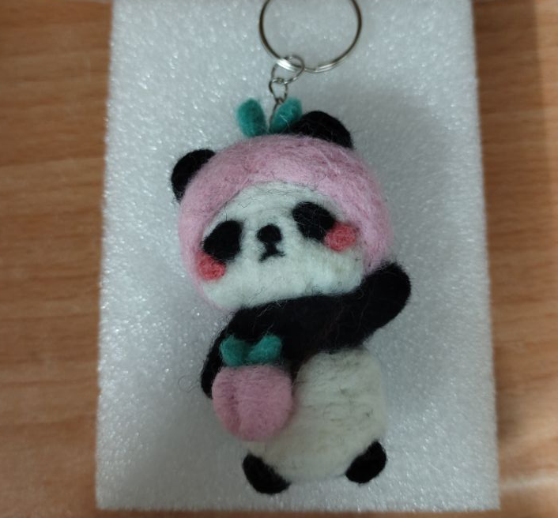
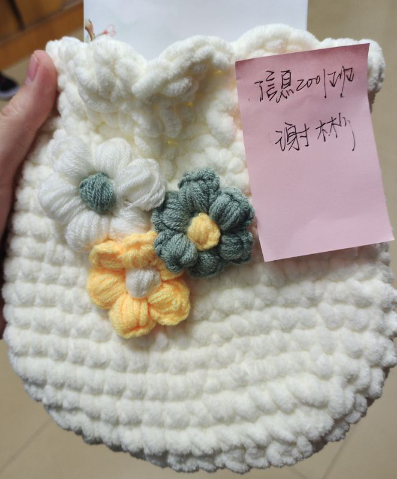
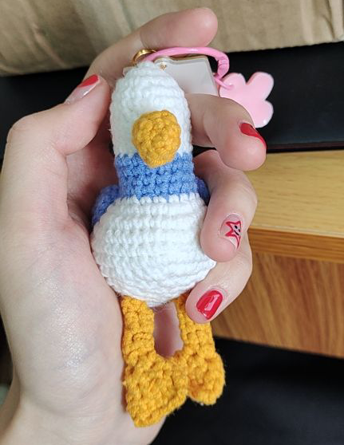

最让我觉得放松的是带着耳机听歌，用笔画着我喜欢的东西。 虽然没有学过画画，也没有足够的想象力来描绘百分之百自己创造的作品， 但是单单只是拿着笔描描画画，也足够让人沉浸。如果幸运的话，能够画下来一副完整的， 满足感和幸福感能瞬间爆棚。
但是我最擅长的是做手工。完成一件作品过程是漫长的，但是当自己真正完成的时候再来看，会觉得之前的努力都是值得的。 完成一件手工，需要沉下心来，全心全意地投入，偶尔想想，这样的一个人沉浸式的独处，是很难得的。 每次看着自己做的手工，都会油然而生一股满足感与自信感，或许他们真的有灵魂，能传递我能量。
|  |  |  |
左图是部分手工作品，分别是羊毛戳桃桃熊猫、小花包和无眼鸭鸭。